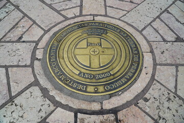
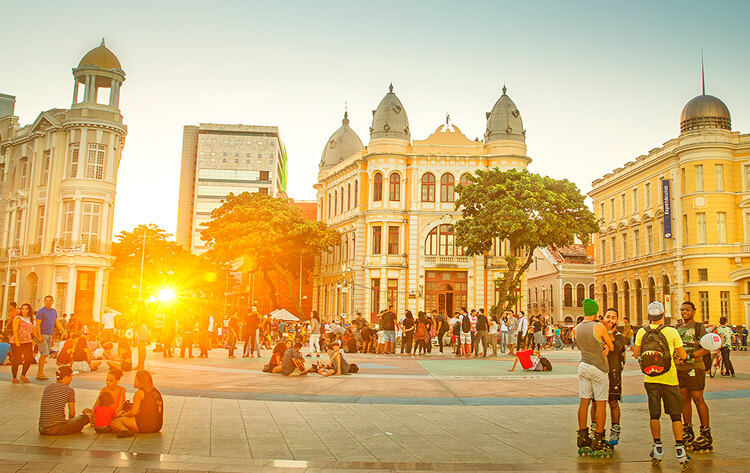

Conheça o Marco Zero
História
Origem: O Marco Zero foi instalado em 1850 para marcar o ponto inicial da medição geodésica do estado de Pernambuco, estabelecendo a partir daí a referência para a divisão territorial e o mapeamento da região.
Construção: A praça foi reformada diversas vezes, mas o marco original, que é um obelisco de granito, continua a ser o centro da praça e um símbolo de Recife.
Relação com a cidade: O Marco Zero também é visto como o ponto de origem da cidade, já que Recife foi um dos primeiros núcleos urbanos estabelecidos no Brasil, com forte ligação ao mar e ao comércio no período colonial.
Praça do Marco Zero
Localização: A Praça está situada bem no coração do Recife Antigo, com vista para o mar e para o Porto do Recife, que foi um dos maiores centros comerciais do Brasil colonial.
Cultura e lazer: Além do marco físico, a praça e a região ao redor são um centro cultural e de lazer, com vários restaurantes, bares e espaços culturais. É o local onde acontecem diversos eventos culturais, shows ao ar livre e feiras. Vista: A área também oferece uma vista para o Recife antigo, o Rio Capibaribe e o Iate Clube do Recife.
Atrações Próximas


Marco Zero e o Turismo
O Marco Zero é uma das portas de entrada para quem visita o Recife Antigo e também uma referência para os turistas que querem explorar o centro histórico da cidade. Sua localização central e acessibilidade fazem dele um ponto de encontro popular entre moradores e visitantes.
